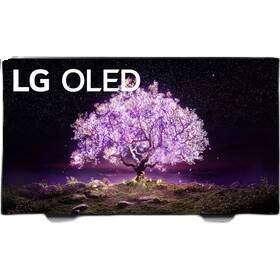
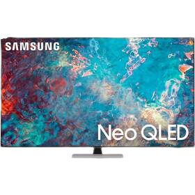
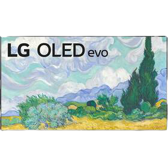
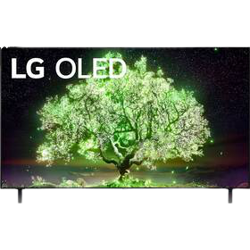

Kodi
.png)
Televízor LG OLED65C12 strieborná/biela
S televízorom LG OLED65C12 vás čaká úžasná zábava, od ktorej sa bude ťažké odtrhnúť. Jedná sa totiž o moderný prístroj, ktorý vám zásluhou skvelého 4K Ultra HD rozlíšenia, procesora α9 Gen4 a technológie HDR prinesie skutočne impozantný obraz. Ten vás dočista pohltí, takže sa razom ocitnete v centre filmového, seriálového i napríklad športového diania. Aby bol navyše váš zážitok kompletný, postará sa tento OLED televízor aj o priestorový zvuk – jeho garantom je tu špičková audio technológia Dolby Atmos.
Parametre Obrazovky:
- Tecnológia displeja: OLED
- Uhlopriečka obrazovky: 164 cm
- Rozlíšenie displeja: 4K Ultra HD
- Technológia zobrazenia: OLED
- Zobrazovacia frekvencia panelu: 100 Hz
Naša cena s DPH: 1 999.00 €
Televízor Samsung QE55Q80AA strieborná
Ponorte sa do ultra ostrého obrazu televízoru Samsung QLED 4K. Tento inteligentný televízor ponúka nielen ohromujúcu mieru detailov, ale aj špičkový obraz vďaka technológii Quantum Dot, ktorá umožňuje zobraziť až miliardu farebných odtieňov. Obrazovka má navyše ultraširokouhlé pozorovacie uhly. O plynulý pohyb a čistú kvalitu obrazu sa postará funkcia Motion Xcelerator Turbo+. Okrem televíznych programov, filmov a seriálov si tak môžete vychutnať aj plynulé hranie hier bez meškania a rozmazania.
Parametre Obrazovky:
- Tecnológia displeja: QLED
- Uhlopriečka obrazovky: 138 cm
- Rozlíšenie displeja: 4K Ultra HD
- Technológia zobrazenia: QLED
- Zobrazovacia frekvencia panelu: 100 Hz
Naša cena s DPH: 949.00 €
Televízor LG OLED65G1 Titanium
Televízor LG OLED65G1 sa pýši špičkovou technológiou OLED evo s miliónmi samosvietiacich pixelov, skvelým 4K Ultra HD rozlíšením a podporou vysokého dynamického rozsahu (HDR). Či už tak prostredníctvom neho sledujete najnovší hollywoodsky film, nekonečný český seriál, alebo živé stretnutie svojho obľúbeného tímu, vždy sa môžete spoľahnúť na perfektný obraz, ktorý vás vtiahne priamo do centra diania. Technológie Dolby Atmos a AI Sound Pro sa pritom postarajú o pekne vyladený priestorový zvuk, a tak máte zaistený skutočne komplexný audiovizuálny zážitok.
Parametre Obrazovky:
- Tecnológia displeja: OLED
- Uhlopriečka obrazovky: 164 cm
- Rozlíšenie displeja: 4K Ultra HD
- Technológia zobrazenia: OLED
- Zobrazovacia frekvencia panelu: 100 Hz
Naša cena s DPH: 2 779.00 €
Televízor Samsung QE55QN85AA strieborná
Ponorte sa do ultra ostrého obrazu televízoru Samsung Neo QLED 4K. Tento inteligentný televízor ponúka nielen očarujúcu mieru detailov, ale aj špičkový kontrast vďaka technológii Quantum Matrix. Táto technológia riadi podsvietenie v jednotlivých zónach obrazu a dokáže sprostredkovať všetko od najhlbších odtieňov čiernej až po najjasnejšie bielu. Obrazovka má navyše ultraširokouhlé pozorovacie uhly a antireflexný povrch. O plynulý pohyb a čistú kvalitu obrazu sa postará funkcia Motion Xcelerator Turbo+. Okrem televíznych programov, filmov a seriálov si tak môžete vychutnať aj plynulé hranie hier bez meškania a rozmazania. Spoločne s technológiou Quantum Dot, ktorá zobrazuje až miliardu farebných odtieňov, tak získate úplne dokonalý obraz.
Parametre Obrazovky:
- Tecnológia displeja: QLED
- Uhlopriečka obrazovky: 138 cm
- Rozlíšenie displeja: 4K Ultra HD
- Technológia zobrazenia: QLED
- Zobrazovacia frekvencia panelu: 100 Hz
Naša cena s DPH: 1 149.00 €
Televízor LG OLED55A1 čierna
S LG OLED TV sa vám otvára úplne nová dimenzia sledovania TV. Okrem geniálnych funkcií systému webOS sa totiž sústredí na maximálnu obrazovú kvalitu. Za tou stojí nielen detailné 4K rozlíšenie, ale tiež OLED technológia so samosvietiacimi pixelmi. Výsledkom je nekonečný kontrast, dokonalá čierna a zároveň aj krásne tenký dizajn televízora. Obraz i zvuk navyše vylepšujú špičkové technológie Dolby Vision IQ a Dolby Atmos spolu s revolučným procesorom α7 Gen4 AI 4K.
Parametre Obrazovky:
- Tecnológia displeja: OLED
- Uhlopriečka obrazovky: 139 cm
- Rozlíšenie displeja: 4K Ultra HD
- Technológia zobrazenia: OLED
- Zobrazovacia frekvencia panelu: 50 Hz